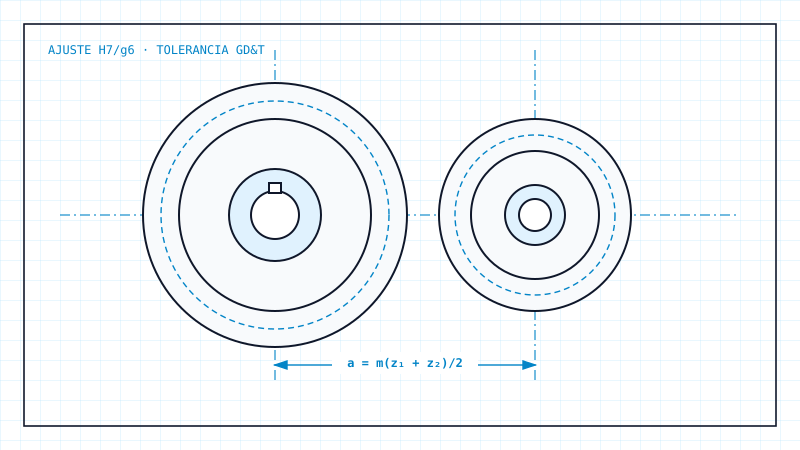
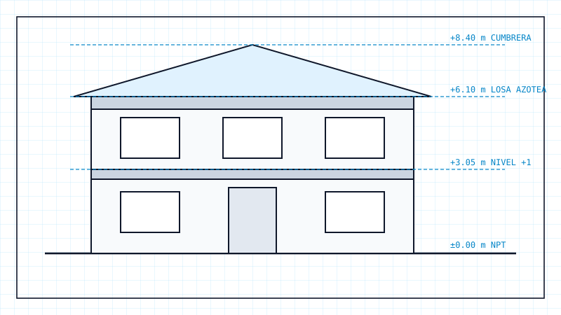
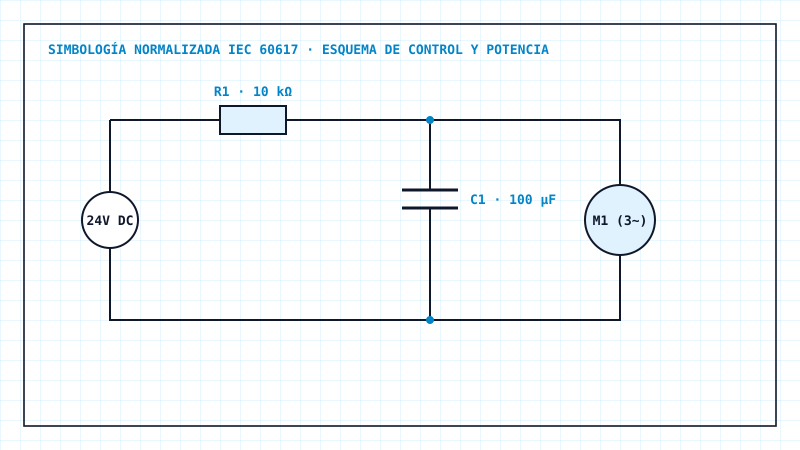

ISO 2768 · ASME Y14.5
Mecánica Industrial y Mecatrónica
Diseño de piezas torneadas o fresadas, trenes de engranajes, planos de conjunto en despiece y tolerancias geométricas de ajuste.
Selecciona una rama para consultar sus planos típicos, normativa y esquema representativo.
Vista simultánea de las láminas y estándares empleados en la industria.

Diseño de piezas torneadas o fresadas, trenes de engranajes, planos de conjunto en despiece y tolerancias geométricas de ajuste.

Planos de planta, elevaciones de fachada, cortes constructivos, detalles de armadura estructural y coordinación de instalaciones.

Diagramas unifilares de distribución, esquemas de automatización y potencia, diagramas electrónicos y ruteo multicapa de PCB.